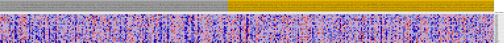
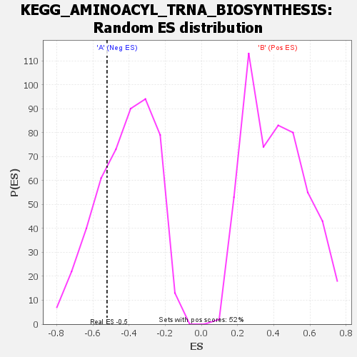

| | | Dataset | my.my.cls#B_versus_A.my.cls#B_versus_A_repos |
| Phenotype | my.cls#B_versus_A_repos |
| Upregulated in class | A |
| GeneSet | KEGG_AMINOACYL_TRNA_BIOSYNTHESIS |
| Enrichment Score (ES) | -0.52163905 |
| Normalized Enrichment Score (NES) | -1.2565053 |
| Nominal p-value | 0.25052193 |
| FDR q-value | 0.5643294 |
| FWER p-Value | 0.961 |
Table: GSEA Results Summary
 Fig 1: Enrichment plot: KEGG_AMINOACYL_TRNA_BIOSYNTHESIS
Fig 1: Enrichment plot: KEGG_AMINOACYL_TRNA_BIOSYNTHESIS
Profile of the Running ES Score & Positions of GeneSet Members on the Rank Ordered List
| SYMBOL | TITLE | RANK IN GENE LIST | RANK METRIC SCORE | RUNNING ES | CORE ENRICHMENT | | 1 | YARS2 | na | 13286 | 0.050 | -0.1788 | No |
| 2 | RARS2 | na | 14047 | 0.047 | -0.1392 | No |
| 3 | PSTK | na | 21194 | 0.026 | -0.2358 | No |
| 4 | PARS2 | na | 22266 | 0.024 | -0.2282 | No |
| 5 | CARS2 | na | 24368 | 0.018 | -0.2450 | No |
| 6 | FARS2 | na | 25438 | 0.015 | -0.2466 | No |
| 7 | DARS2 | na | 30994 | 0.002 | -0.3430 | No |
| 8 | EARS2 | na | 32445 | -0.002 | -0.3664 | No |
| 9 | MTFMT | na | 34186 | -0.006 | -0.3902 | No |
| 10 | SARS2 | na | 39693 | -0.020 | -0.4643 | No |
| 11 | AARS2 | na | 42937 | -0.030 | -0.4880 | Yes |
| 12 | IARS2 | na | 43354 | -0.031 | -0.4603 | Yes |
| 13 | VARS2 | na | 44080 | -0.033 | -0.4356 | Yes |
| 14 | FARSA | na | 45018 | -0.036 | -0.4115 | Yes |
| 15 | LARS2 | na | 46982 | -0.043 | -0.3977 | Yes |
| 16 | FARSB | na | 48639 | -0.049 | -0.3712 | Yes |
| 17 | NARS2 | na | 49656 | -0.054 | -0.3287 | Yes |
| 18 | TARS2 | na | 49733 | -0.054 | -0.2691 | Yes |
| 19 | MARS2 | na | 52471 | -0.069 | -0.2395 | Yes |
| 20 | HARS2 | na | 52775 | -0.071 | -0.1643 | Yes |
| 21 | SEPSECS | na | 52817 | -0.072 | -0.0840 | Yes |
| 22 | WARS2 | na | 56211 | -0.134 | 0.0072 | Yes |
Table: GSEA details [plain text format]

Fig 2: KEGG_AMINOACYL_TRNA_BIOSYNTHESIS
Blue-Pink O' Gram in the Space of the Analyzed GeneSet

Fig 3: KEGG_AMINOACYL_TRNA_BIOSYNTHESIS: Random ES distribution
Gene set null distribution of ES for KEGG_AMINOACYL_TRNA_BIOSYNTHESIS